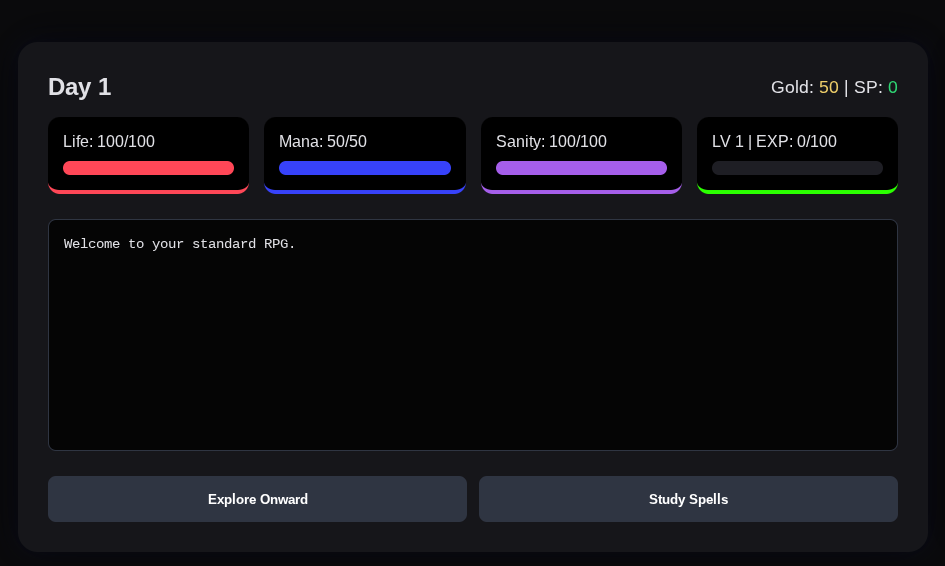
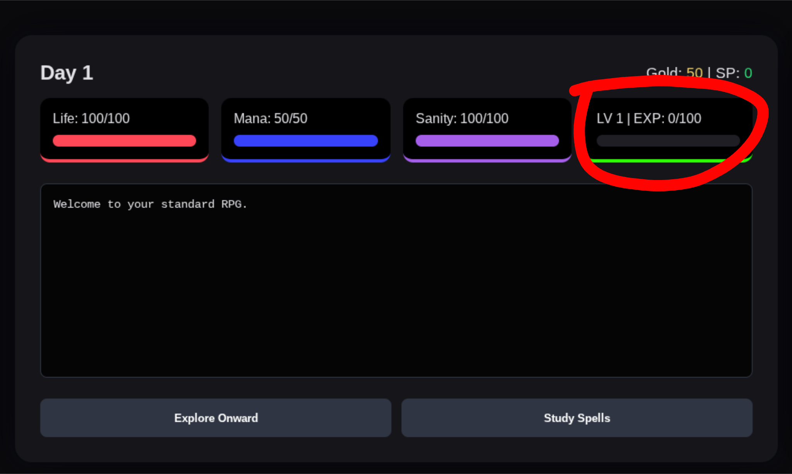

The main box.
In here, you will find all of the things that you will (mostly) need for your playthrough.
Main stats
In the crudly drawn red box, you will find your 3 main stats. HP, Mana, and Sanity. HP is kind of obvious. If it reaches 0, you die. Mana is required to cast spells. You gain a certain amount of mana back each day. Sanity is important for mana. If your sanity reaches 0, nothing happens. However when you click to go to the next day, you lose a lot of mana.

EXP & LV
In the red circle, you will find the EXP bar, which also relates to your LV. Each LV has a certain threshold to get to. Once you level up, you gain a certain amount of each stat, and you will also gain a skill point.
